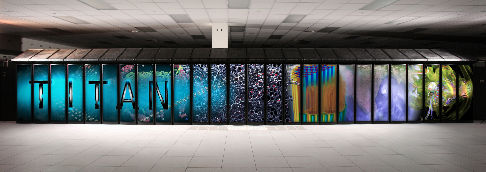
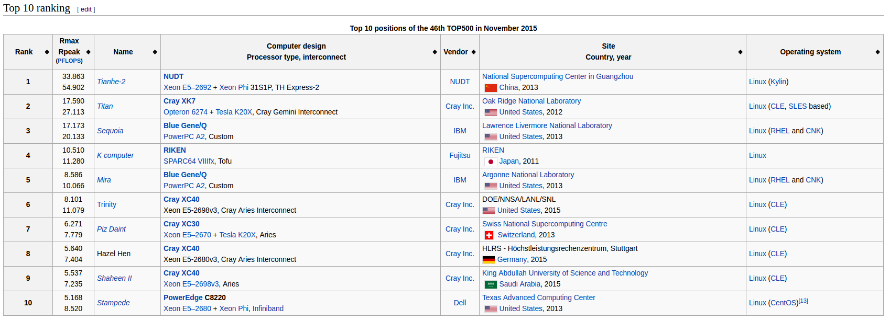
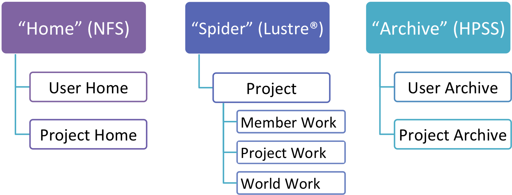
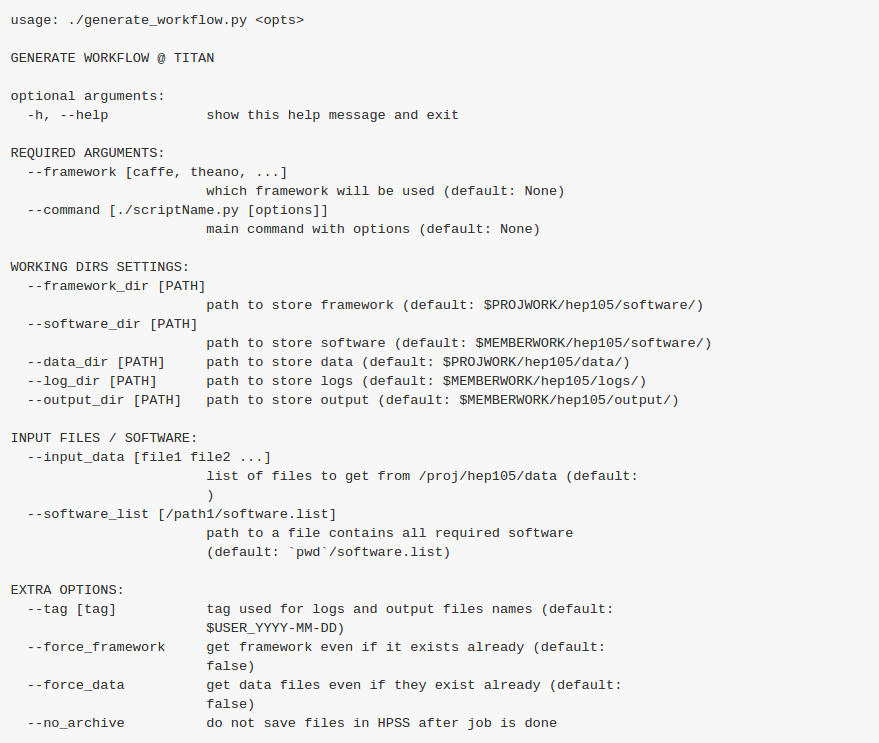

name: inverse layout: true class: middle, inverse --- # Introduction to ORNL .red[*] .footnote[.red[*] Oak Ridge National Laboratory] ## TG, MLVF, 03.30.2016 https://github.com/TomaszGolan/ornl_workflow/blob/master/docs/ornl_howto.md  --- # 2nd on TOP500 list  --- # Yes, there are more than 2 GPUs .red[*] .footnote[.red[*] there are 18,668 NVIDIA Kepler GPUs] <img src="img/andy.gif" width = 100%> --- # General-purpose system 1/3 ## home.ccs.ornl.gov Home is a general purpose system that can be used to log into other OLCF systems that are not directly accessible from outside the OLCF network. For example, running the screen or tmux utility is one common use of Home. Compiling, data transfer, or executing long-running or memory-intensive tasks should never be performed on Home. More information can be found on the The Home Login Host page. --- # General-purpose system 2/3 ## dtn.ccs.ornl.gov The Data Transfer Nodes are hosts specifically designed to provide optimized data transfer between OLCF systems and systems outside of the OLCF network. More information can be found on the Employing Data Transfer Nodes page. --- # General-purpose system 3/3 ## HPSS The High Performance Storage System (HPSS) provides tape storage for large amounts of data created on OLCF systems. The HPSS can be accessed from any OLCF system through the hsi utility. More information can be found on the HPSS page. --- # Storage  --- | What | Where | Path | |:-:|:-:|:-:| | Long-term data for routine access that is unrelated to a project | *User Home* | `$HOME` | Long-term data for archival access that is unrelated to a project | *User Archive* | `/home/$USER` | | Long-term project data for routine access that's shared with other project members | *Project Home* | `/ccs/proj/[projid]` | | Short-term project data for fast, batch-job access that you don't want to share | *Member Work* | `$MEMBERWORK/[projid]` | | Short-term project data for fast, batch-job access that's shared with other project members | *Project Work* | `$PROJWORK/[projid]` | | Short-term project data for fast, batch-job access that's shared with those outside your project | *World Work* | `$WORLDWORK/[projid]` | | Long-term project data for archival access that's shared with other project members | *Project Archive* | `/proj/[projid]` | --- | Area | Path | Type | Permissions | Quota | Backups | Purged | Retention | |:-:|:-:|:-:|:-:|:-:|:-:|:-:|:-:| | *User Home* | `$HOME` | NFS | User-controlled | 10 GB | Yes | No | 90 days | | *User Archive* | `/home/$USER` | HPSS | User-controlled | 2 TB | No | No | 90 days| | *Project Home* | `/ccs/proj/[projid]` | NFS | 770 | 50 GB | Yes | No | 90 days| | *Member Work* | `$MEMBERWORK/[projid]` | Lustre® | 700 | 10 TB | No | 14 days | N/A | | *Project Work* | `$PROJWORK/[projid]` | Lustre® | 770 | 100 TB | No | 90 days | N/A | | *World Work* | `$WORLDWORK/[projid]` | Lustre® | 775 | 10 TB | No | 90 days | N/A | | *Project Archive* | `/proj/[projid]` | HPSS | 770 | 100 TB | No | No | 90 days * **Purged** - Period of time, post-file-access, after which a file will be marked as eligible for permanent deletion. * **Retention** - Period of time, post-account-deactivation or post-project-end, after which data will be marked as eligible for permanent deletion. --- # Handling HPSS * Access to archive (`/home/$USER` or `/css/proj/hep105`) only using `hsi` at dtn!!! ### Copying file to HPSS ```bash ssh dtn.ccs.ornl.gov # use only this node to handle HPSS hsi put myFile ``` ### Retrieve file from HPSS ```bash ssh dtn.ccs.ornl.gov # use only this node to handle HPSS hsi get myFile ``` --- # More on hsi * call `hsi` [nothing] to manage archive in "interactive" mode * call many hsi commands at a time, e.g. ```bash touch myFile hsi "mkdir myDir; cd myDir; put myFile" ``` * `htar -cf myTarball.htar myDir` creates a htarball in HPSS and corresponding `idx` file * `htar -xf myTarball.htar` get a htarball from HPSS and extract in current directory * `htar -xf myTarball.htar myFile` extract only myFile from myTarball.htar into current directory * `htar -cf myDir/myTarball.htar myDir` works too --- # What you can't do, but could try... * archive directly to a folder ```bash hsi put myFile some/path/in/archive/ ``` *must cd first* * unhtar directly to some folder ```bash htar -cf data.htar my_folder ``` *it will extract only my_folder from data.htar* --- # Example workflow * call dtn job to get your data from archive * call titan job to do your calculations * call dtn job to put your result to archive --- # HelloWorld.sh ```bash #!/bin/bash date >> HelloWorld.dat pwd >> HelloWorld.dat ls >> HelloWorld.dat ``` * run using (start with dtn!!!) ```bash qsub -q dtn HelloWorld_get.pbs ``` * HelloWorld_get.pbs will run next jobs --- # HelloWorld_get.pbs ```bash #PBS -A hep105 #PBS -l walltime=00:00:30 #PBS -l nodes=1 #PBS -j oe #PBS -o HelloWorld_get.out cd $MEMBERWORK/hep105/HelloWorld/ hsi get HelloWorld/HelloWorld.dat hsi get HelloWorld/HelloWorld.sh qsub -q titan $HOME/HelloWorld/HelloWorld_do.pbs ``` --- # HelloWorld_do.pbs ```bash #PBS -A hep105 #PBS -l walltime=00:00:30 #PBS -l nodes=1 #PBS -j oe #PBS -o HelloWorld_do.out cd $MEMBERWORK/hep105/HelloWorld/ aprun ./HelloWorld.sh qsub -q dtn $HOME/HelloWorld/HelloWorld_put.pbs ``` --- # HelloWorld_put.pbs ```bash #PBS -A hep105 #PBS -l walltime=00:00:30 #PBS -l nodes=1 #PBS -j oe #PBS -o HelloWorld_put.out cd $MEMBERWORK/hep105/HelloWorld/ hsi put HelloWorld.dat hsi mv HelloWorld.dat HelloWorld/ ``` --- # More on nodes 1/3 ## Login nodes Login nodes are designed to facilitate ssh access into the overall system, and to handle simple tasks. When you first log in, you are placed on a login node. Login nodes are shared by all users of a system, and should only be used for basic tasks such as file editing, code compilation, data backup, and job submission. Login nodes should not be used for memory-intensive nor processing-intensive tasks. Users should also limit the number of simultaneous tasks performed on login nodes. For example, a user should not run ten simultaneous tar processes. --- # More on nodes 2/3 ## Service nodes Memory-intensive tasks, processor-intensive tasks, and any production-type work should be submitted to the machine's batch system (e.g. to Torque/MOAB via qsub). When a job is submitted to the batch system, the job submission script is first executed on a service node. Any job submitted to the batch system is handled in this way, including interactive batch jobs (e.g. via `qsub -I`). Often users are under the (false) impression that they are executing commands on compute nodes while typing commands in an interactive batch job. On Cray machines, this is not the case. --- # More on nodes 3/3 On Cray machines, when the aprun command is issued within a job script (or on the command line within an interactive batch job), the binary passed to aprun is copied to and executed in parallel on a set of compute nodes. Compute nodes run a Linux microkernel for reduced overhead and improved performance. *Only User Work (Lustre®) and Project Work (Lustre®) storage areas are available to compute nodes on OLCF Cray systems. Other storage spaces (User Home, User Archive, Project Home, and Project Archive) are not mounted on compute nodes.* --- # Workflow generator https://github.com/TomaszGolan/ornl_workflow ---  --- ```bash #!/bin/bash NEPOCHS=1 LRATE=0.0025 L2REG=0.0001 TAG="lasagne_first_test_small_betaprime" DATAFILENAME="minosmatch_fuel_me1Bmc_small.hdf5" SAVEMODELNAME="$MEMBERWORK/hep105/output/$TAG/$TAG.npz" PYTHONPROG="./minerva_triamese_betaprime.py" COMMAND="$PYTHONPROG -l \ -n $NEPOCHS \ -r $LRATE \ -g $L2REG \ -s $SAVEMODELNAME \ -d $PROJWORK/hep105/data/$DATAFILENAME" ./generate_workflow.py \ --framework theano \ --input_data "theano/$DATAFILENAME" \ --tag $TAG \ --command "$COMMAND" ```